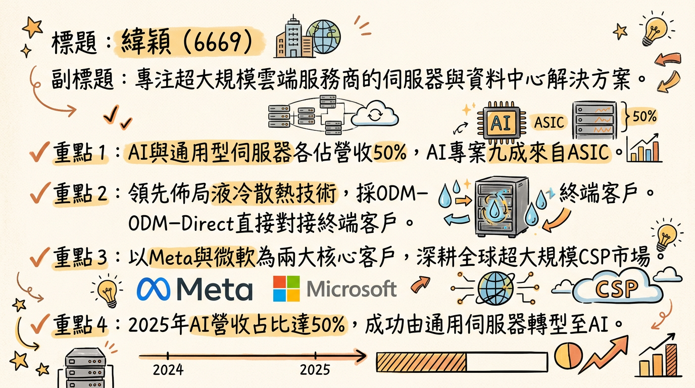
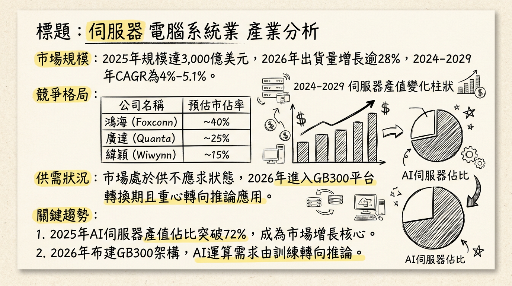
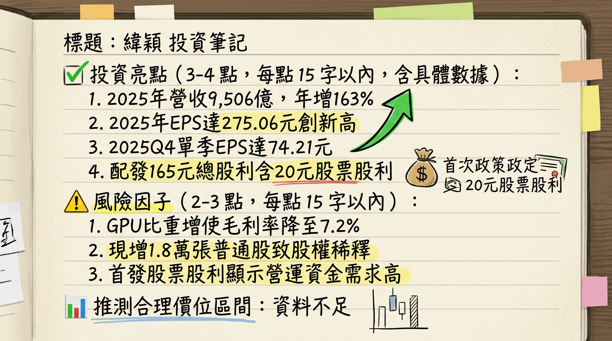

6669 緯穎 深度研究報告
一句話摘要
緯穎（6669）憑藉 ASIC 伺服器的高滲透率與領先的液冷佈局，2025 年以 EPS 275.06 元創下歷史新高；2026 年預期在 Blackwell 平台放量與通用伺服器回溫下，營收將正式挑戰兆元大關。
公司概覽
緯穎（Wiwynn）為緯創集團子公司，專注於雲端資料中心硬體解決方案。其獨特的 ODM-Direct 模式直接對接超大規模雲端服務供應商（CSP），跳過傳統 OEM 代理，具備高度客製化與成本競爭優勢。
營收結構（2025 年數據）
| 業務類型 | 營收佔比 | 核心驅動力 |
|---|
| AI 伺服器 | 50% | ASIC 專案佔其中 9 成，主要受惠於 Meta/Amazon 自研晶片需求。 |
| 通用型伺服器 | 50% | 受惠於 AI 推論（Inference）工作負載轉移帶動的汰換潮。 |
| 總計 | 100% | 2025 全年營收達 9,506.63 億元。 |
核心競爭優勢
ASIC 伺服器領先者：與同業追逐高單價但低毛利的 GPU 伺服器不同，緯穎在 ASIC（如 Meta MTIA, Amazon Trainium）具備極高市佔率，利潤結構相對穩定。
先進散熱佈局：領先業界投入液冷（Liquid Cooling）與浸沒式冷卻技術，成為 NVIDIA GB300 等高功耗平台首選供應商。
地緣政治韌性：全球產能部署完整（美國、馬來西亞、墨西哥、台灣），能靈活應對不同區域客戶需求。
財務分析
2025 年月營收趨勢（概算與實績）
註：以下數據根據 2025 全年營收 9,506.63 億與季度表現整合推估。
| 月份 | 金額 (億新台幣) | 月增率 MoM | 年增率 YoY | 備註 |
|---|
| 2025/10 | 955.3 | - | - | Q4 營運動能轉強 |
| 2025/11 | 980.5 | +2.6% | - | 高階 GPU 專案起跑 |
| 2025/12 | 988.6 | +0.8% | - | 美國新廠產能開出 |
| 2025 Q4 | 2,924.4 | +11.2% | 高成長 | 創單季營收歷史新高 |
財務年度表現
- 2025 全年營收：9,506.63 億元（YoY +163.7%）
- 2025 全年 EPS：275.06 元（YoY +124.4%）
- 2025 股利政策：現金 145 元 + 股票 20 元（合計 165 元）。
法說會重點（2026/02/26）
營運展望：管理層明確預期 2026 年「一定會比 2025 年更好」，成長動能集中於下半年。
股利調整：首度配發股票股利（20 元），主因為保留現金應付高昂的 AI 備料成本（存貨）與資本支出。
電力規劃：因應機櫃電力需求飆升至 100kW+，公司電力基礎設施規劃已超前部署至 2028 年。
毛利稀釋說明：Q4 毛利率下滑至 7.23% 是因為 GPU 專案單價極高（ASP 大），雖稀釋百分比，但獲利「絕對值」持續增加。
券商觀點
| 券商名 | 目標價 (TWD) | 評等 | 日期 | 關鍵觀點 |
|---|
| 摩根士丹利 | 5,500 | 優於大盤 | 2026/01/10 | Meta/MSFT 訂單動能延續至 2027 |
| 中國信託證券 | 5,000 | 看多 | 2026/01/14 | 受惠 ASIC 與液冷技術領先 |
| FactSet 綜合 | 5,790 | 買進 (中位數) | 2026/01/09 | 2026 年 EPS 有望突破 350 元 |
財報深度分析
利潤率趨勢表格
| 指標 | 2025 Q1 | 2025 Q2 | 2025 Q3 | 2025 Q4 | 2025 全年 |
|---|
| 毛利率 (GPM) | 9.40% | 9.40% | 8.80% | 7.23% | 8.3% |
| 營益率 (OPM) | 7.30% | 7.10% | 7.30% | 5.63% | 6.7% |
| 淨利率 (NPM) | 5.70% | 5.50% | 5.80% | 4.72% | 5.4% |
| 單季 EPS (元) | 68.25 | 64.30 | 68.30 | 74.21 | 275.06 |
- 存貨分析：截至 2025 Q3，存貨金額高達 1,564 億元，主要為因應 AI 晶片的高價值備料。
- 資本支出：2026 年預計將顯著高於 2025 年的 130 億元，預估達 200 億元 以上。
股權異動與資本計畫
- 現金增資：董事會通過擬辦理不超過 18,000 張（1.8萬張）之普通股現金增資案，預估對 EPS 稀釋效果約 10%。
- 海外可轉債 (ECB)：已通過上限 20 億美元 的第二次海外 ECB 籌資計畫。
- 母公司持股：緯創（3231）持股約 35.5%，股權結構穩健。
產業分析
競爭格局比較 (2025 全年數據)
| 公司 | 營收規模 | AI 營收佔比 | 毛利率 | 技術亮點 |
|---|
| 緯穎 (6669) | 9,506 億 | ~50% | 8.3% | ASIC 領導、液冷技術 |
| 鴻海 (2317) | 8.1 兆 | ~30% | 6.3% | 全球 L10-L11 機櫃龍頭 |
| 廣達 (2382) | 2.1 兆 | ~40% | 7.5% | 美系 CSP 全方位需求 |
- 市場趨勢：2026 年 AI 伺服器出貨量預計成長 28%，市場重心由訓練轉向推論（Inference），有利於通用型伺服器回溫。
近期催化劑
* 2026 H1：美國德州新廠與馬來西亞二廠產能全面放量。
* 2026 H2：NVIDIA Blackwell (GB300) 平台大量出貨。
* 新客戶：切入 Amazon Trainium 3 專案與 Oracle 訂單。
* 短期內 1.8 萬張現增導致的 EPS 稀釋壓力。
* 高價組件（HBM/DDR5）漲價對毛利率百分比的稀釋。
⭐ 成長動能時間軸
- 2025 Q4：美國德州 El Paso 廠量產（L11 整合）。
- 2026 Q1：毛利率受惠於產品組合調整預期回溫；165 元股利發放。
- 2026 Q2：馬來西亞二期廠區、墨西哥三廠產能擴充完成。
- 2026 H2：Blackwell / Vera Rubin 平台與新一代 ASIC 產品爆發性成長。
- 2027：主權 AI 專案（如中東、東南亞政府雲）開始貢獻營收。
2026 展望
- 成長動能：AI 營收佔比維持 50%+，通用伺服器出貨年增率預估 20-30%。
- 風險因子：1.8 萬張現增稀釋、高價值物料導致的現金流壓力、地緣政治貿易關稅。
投資結論
獲利跳升：2026 年 EPS 預估在 320 ~ 350 元 區間（以增資後股本保守計算）。
評價回升：隨液冷滲透率提升，緯穎享有技術溢價，本益比有望從目前的 12-14 倍往 18-20 倍靠攏。
目標價區間建議：短期支撐看 4,000 元，中長期目標價調升至 5,200 ~ 5,800 元。
操作建議：下半年動能更強，可於現增利空出盡、毛利回溫時逢低布局。
本報告由 AI 自動產生，資料來源為公開網路資訊，僅供參考，不構成投資建議。產生時間：2026-03-01 03:13
📊 資訊卡


